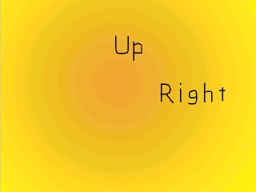
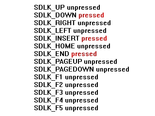

这里你将在不使用事件的情况下检查一个按键是否被按下。通过按键状态，这是完全可能的。有时，检查一个按键是否被按下或弹起比监听事件要容易得多。本节课将教你检查一个按键是否被按下，而不涉及监听键盘事件。
//当用户还没退出时
while( quit == false )
{
//当有事件需要处理
while( SDL_PollEvent( &event ) )
{
//如果用户点击了窗口右上角的关闭按钮
if( event.type == SDL_QUIT )
{
//退出程序
quit = true;
}
}
你可以看到，尽管我们要根据按键按下的动作来显示信息，我们并没有检查任何键盘事件。
//获取按键状态
Uint8 *keystates = SDL_GetKeyState( NULL );
事实上，我们使用了
这个函数能为我们提供一个按键状态数组，那是一个包含了每个按键以及每个按键是否被按下的列表，就像这样：
现在我们可以分辨出是哪些按键被按下了。
为了提供更多信息，我们给函数
SDL_GetKeyState()函数。这个函数能为我们提供一个按键状态数组，那是一个包含了每个按键以及每个按键是否被按下的列表，就像这样：

现在我们可以分辨出是哪些按键被按下了。
为了提供更多信息，我们给函数
SDL_GetKeyState()传入的参数是用来获得可用按键数量的。因为我们不关心共有多少按键，所以我们仅需将它设为NULL。 //如果"上方向键"被按下
if( keystates[ SDLK_UP ] )
{
apply_surface( ( SCREEN_WIDTH - up->w ) / 2, ( SCREEN_HEIGHT / 2 - up->h ) / 2, up, screen );
}
//如果"下方向键"被按下
if( keystates[ SDLK_DOWN ] )
{
apply_surface( ( SCREEN_WIDTH - down->w ) / 2, ( SCREEN_HEIGHT / 2 - down->h ) / 2 + ( SCREEN_HEIGHT / 2 ), down, screen );
}
//如果"左方向键"被按下
if( keystates[ SDLK_LEFT ] )
{
apply_surface( ( SCREEN_WIDTH / 2 - left->w ) / 2, ( SCREEN_HEIGHT - left->h ) / 2, left, screen );
}
//如果"右方向键"被按下
if( keystates[ SDLK_RIGHT ] )
{
apply_surface( ( SCREEN_WIDTH / 2 - right->w ) / 2 + ( SCREEN_WIDTH / 2 ), ( SCREEN_HEIGHT - right->h ) / 2, right, screen );
}
//更新窗口
if( SDL_Flip( screen ) == -1 )
{
return 1;
}
这是一个基本的例子，当”上方向键“被按下时窗口里显示”上“，当”下方向键“被按下时显示”下“，以此类推。
如果这个程序通过事件来编写，代码会长很多。
如果这个程序通过事件来编写，代码会长很多。
SDL_GetKeyState() 和其他的状态函数，如：SDL_GetModState(), SDL_GetMouseState(), SDL_JoystickGetAxis() 等等，都是极其有用的。请在SDL的API参考中学习更多有关内容，你应该把它放在手边的。